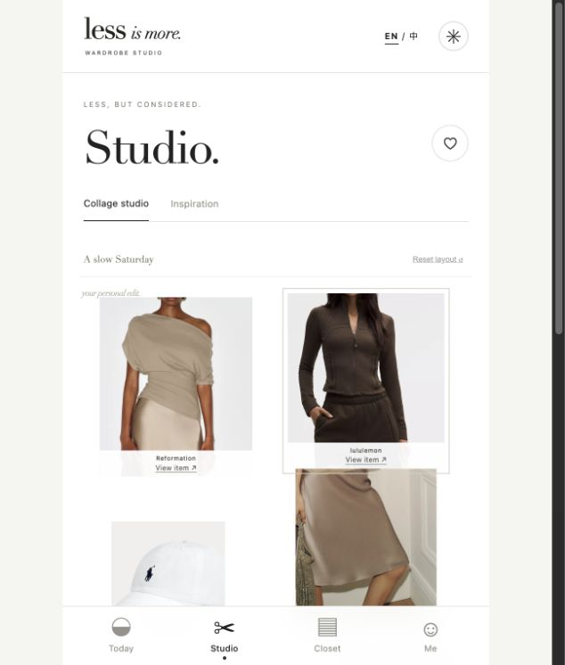
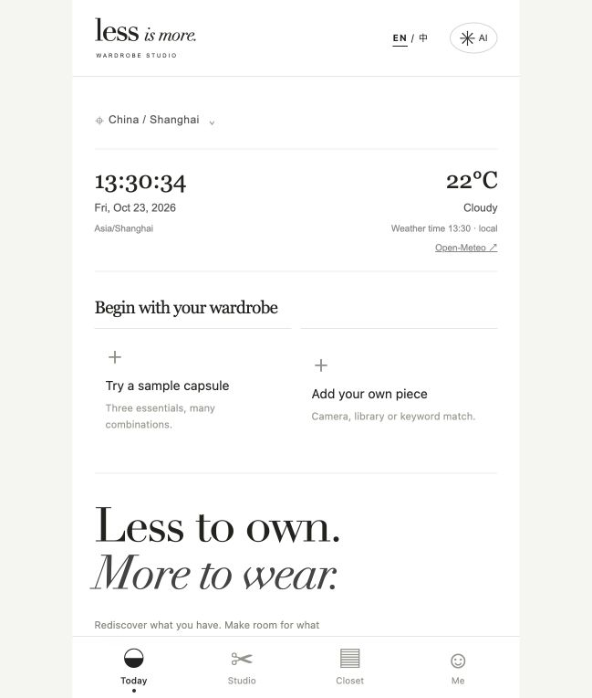
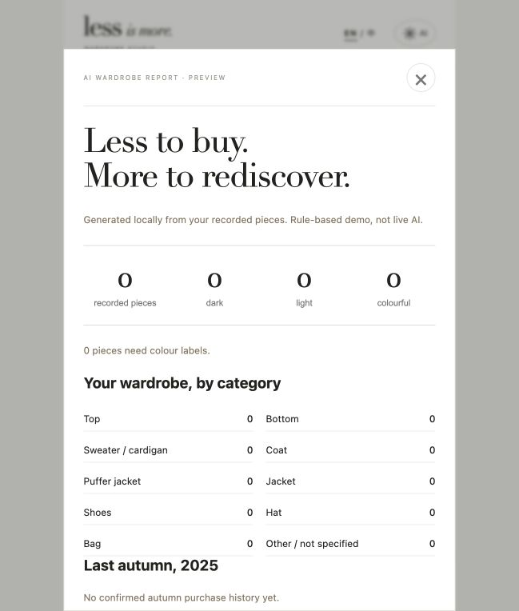

Personal product case · V3 · 2026
Less stuff.
More style.
把已有衣物，穿出更多可能。
LESS｜AI循环衣橱与穿搭助手
杨力诺 · 产品定义 / 交互设计 / AI辅助原型开发

01 / The question
衣服不少，为什么仍然觉得没衣服穿？
购买、收藏和已有衣物彼此分散，用户缺少的是看见组合可能的方式。
01
用户与场景
以纽约生活的年轻时尚用户为首个设计场景：出门前做穿搭决策、浏览多品牌灵感、换季整理衣橱。需求来自生活观察，尚待用户研究验证。
02
产品主张
先盘活已有衣物，再补充真正缺少的单品。将“Less is more”转化为录入、复用、购买提醒和穿着复盘的具体交互。
03
我的职责
主导问题定义、功能优先级、信息架构、视觉与交互方向、商业化假设及原型验收；借助 AI 辅助开发完成 V1—V3 迭代。
录入已有衣物 → 得到搭配 → 记录穿着 → 衣橱复盘 → 理性补购
02 / Product experience
让整理之后，立刻有一套能穿的搭配。

Today · 降低开始成本
录入入口前置，支持拍照、相册与关键词候选确认；结合城市时间与天气开始搭配。
Studio · 自由探索组合
拖拽、替换、垃圾桶移除、撤销和保存；灵感卡支持左右滑动与“我已有”一键入柜。

Profile · 理解与复用
颜色与品类报告、穿着记录和补购建议。示例截图中的数据用于演示，不代表真实用户表现。
03 / Guided walkthrough
一分钟了解关键界面。
基于原型截图制作的界面导览，不是用户测试或真实操作录屏。可直接打开 Demo 体验交互。
04 / Decisions & iteration
设计的重点，是取舍。
优先完成复用闭环导入后优先组合已有上装与下装；信息不足时提示补充已有衣物，避免把购物设为完成任务的前提。
V1 → V2 → V3从熟悉的工具结构，到复古拼贴探索，再收敛至极简视觉；迭代补齐录入前置、替换撤销、详情入口与双语体验。
商业化服务于衣橱先验证免费工具价值，再探索高级复盘、品牌导购与线下预约。购买前提醒已有同类，付费合作应明确标识。
验证价值，而非假设成功计划观察首次录入完成率、首套搭配耗时、穿着记录与提醒后的复用比例。尚无规模化用户、收入或转化数据。
05 / Explore the project
从案例，进入实际体验。
打开 Demo → 点击 Skip → 导入示例衣橱 → 前往 Studio 调整搭配。
打开 V3 Demo ↗下载离线作品包 ↓下载项目设计说明 ↓原型能力：衣物录入、拼贴、收藏、保存与穿着记录可交互；助手、候选匹配和报告采用本地规则；平台支付、库存、留货与核销为模拟。个人资料保存在访问者自己的浏览器中。天气与官网跳转需要联网。
独立个人概念项目无品牌官方合作中英文主要界面